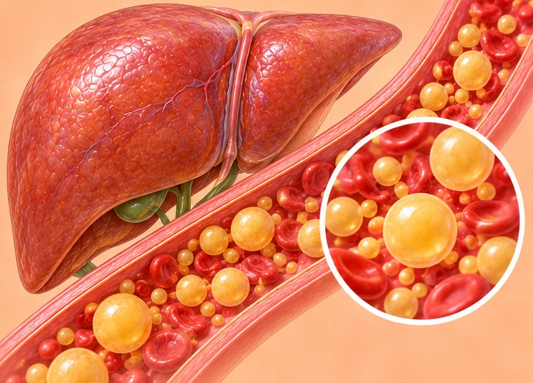
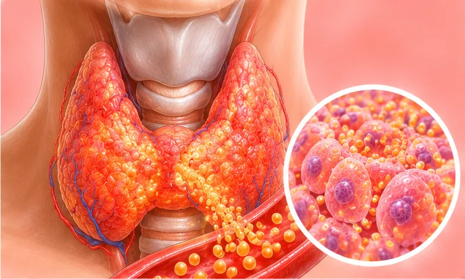
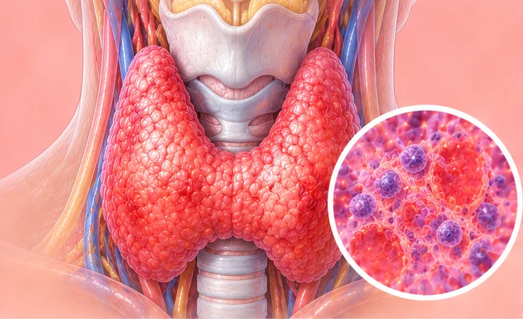
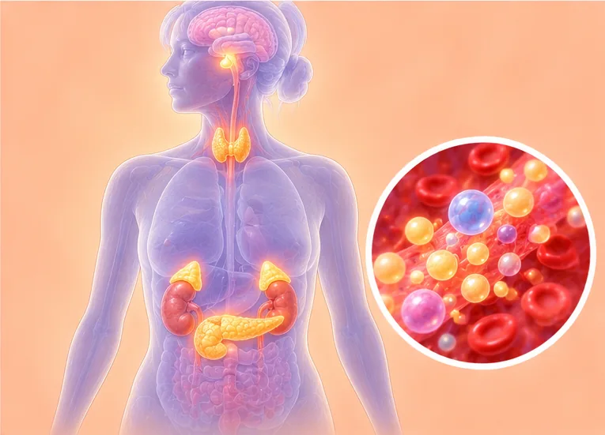
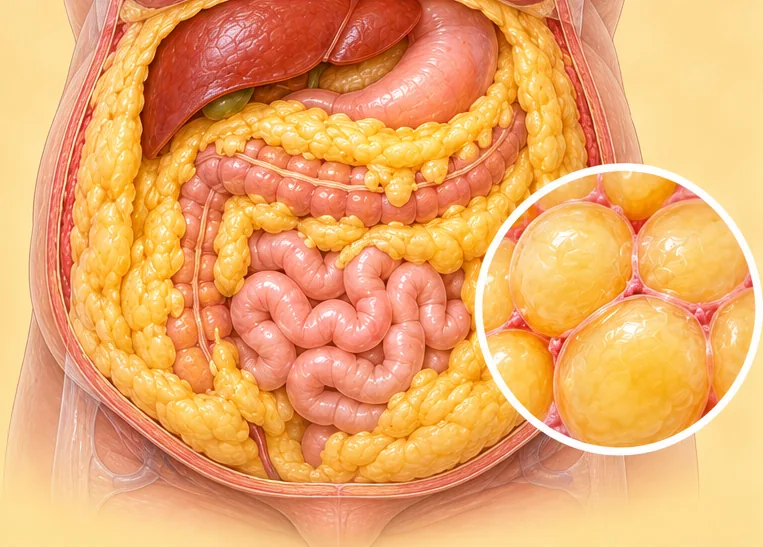
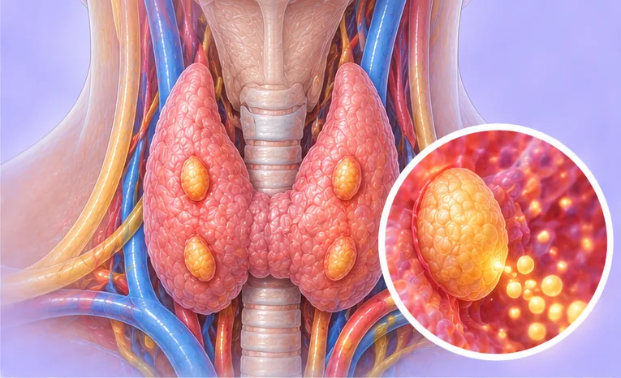
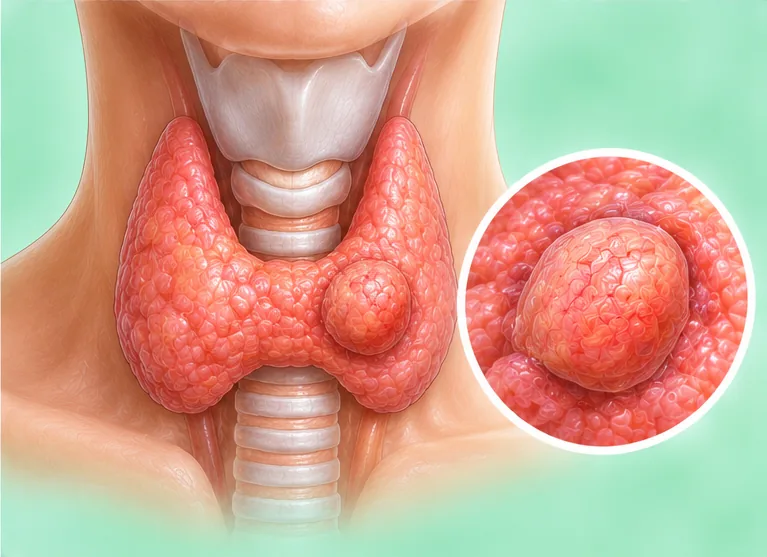

Blood sugar, fats, uric acid & thyroid
51 conditions and symptoms
 Acromegaly (excess growth hormone)
Acromegaly (excess growth hormone) Adrenal gland disease
Adrenal gland disease- Cushing's syndrome
 Diabetes
Diabetes- Diabetes complications
- Diabetes in older adults
- Diabetes insipidus
- Diabetic eye disease
- Diabetic foot
- Diabetic gastroparesis (slow stomach emptying)
- Diabetic kidney disease (nephropathy)
- Diabetic nerve damage (peripheral neuropathy)

Familial high cholesterol (hypercholesterolaemia) Goitre (enlarged thyroid)
Goitre (enlarged thyroid) Gout
Gout- Gouty arthritis

Graves' disease (toxic diffuse goitre)
Hashimoto's thyroiditis- High blood pressure, sugar and cholesterol ("three highs")
- High cholesterol or abnormal blood fats
- High insulin (hyperinsulinaemia)
- High prolactin (hyperprolactinaemia)
- High uric acid

Hormonal imbalance (endocrine disorder)- Impaired fasting glucose (IFG)
- Impaired glucose tolerance (IGT)
- Insulin resistance
- Kidney damage from high uric acid
- Low blood sugar
- Metabolic syndrome

Obesity- Overactive thyroid
- Phaeochromocytoma
- Pre-diabetes
- Primary aldosteronism (Conn's syndrome)

Primary hyperparathyroidism- Simple goitre
- Steroid-induced diabetes
- Subacute thyroiditis
- Subclinical hyperthyroidism
 Subclinical hypothyroidism
Subclinical hypothyroidism
Thyroid adenoma (benign tumour)- Thyroid inflammation (thyroiditis)
- Thyroid nodule
- Thyroid nodule with calcification
- Thyroid tumour
- Type 1 diabetes
- Type 2 diabetes
- Underactive parathyroid (hypoparathyroidism)
- Underactive pituitary gland (hypopituitarism)
- Underactive thyroid